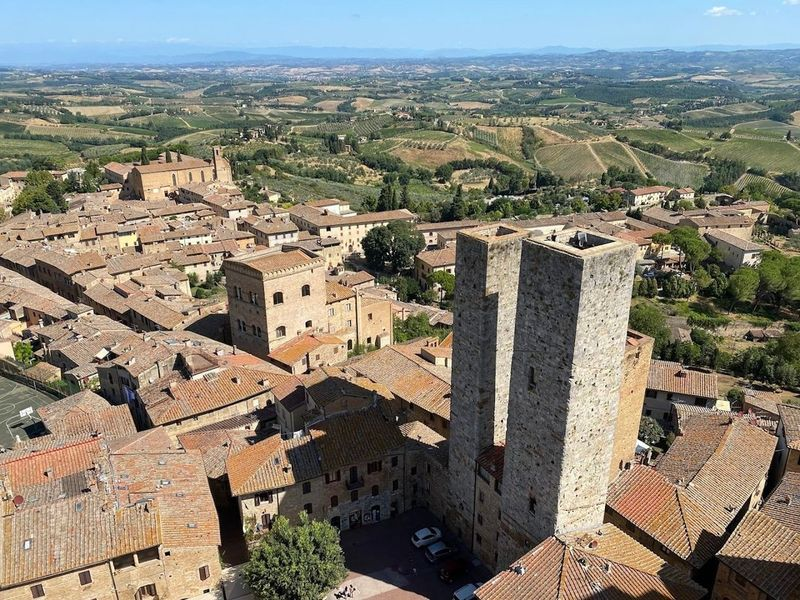
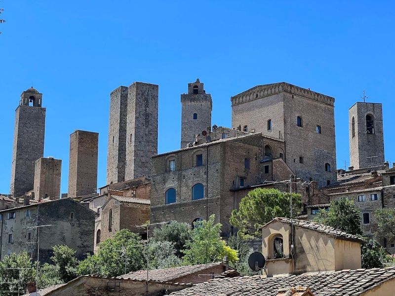
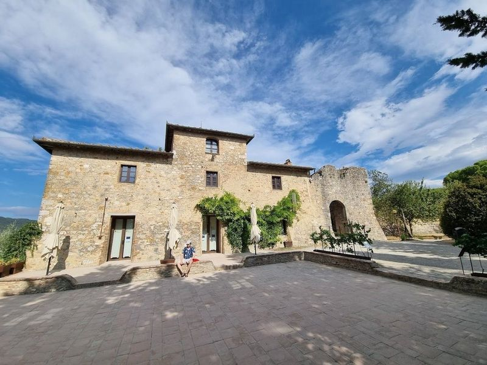
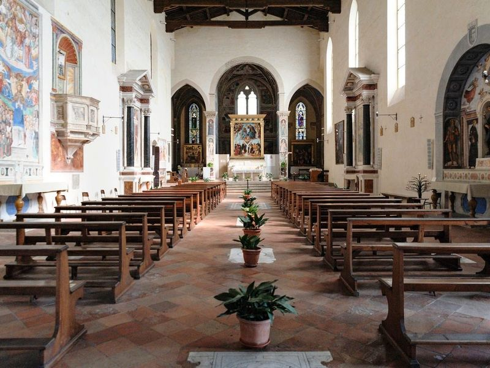
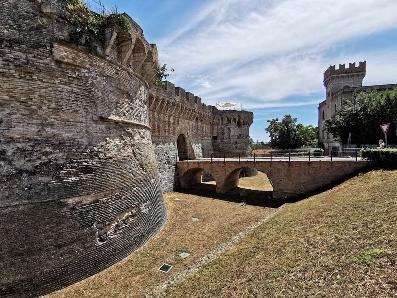
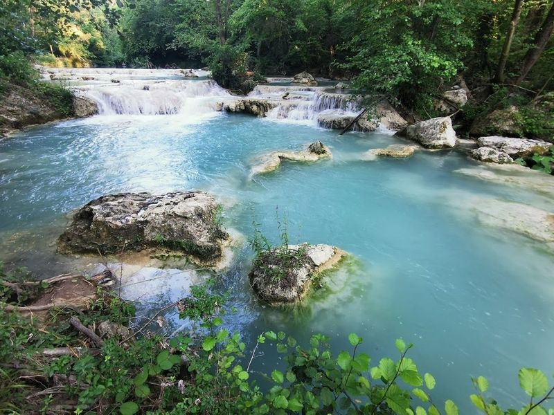
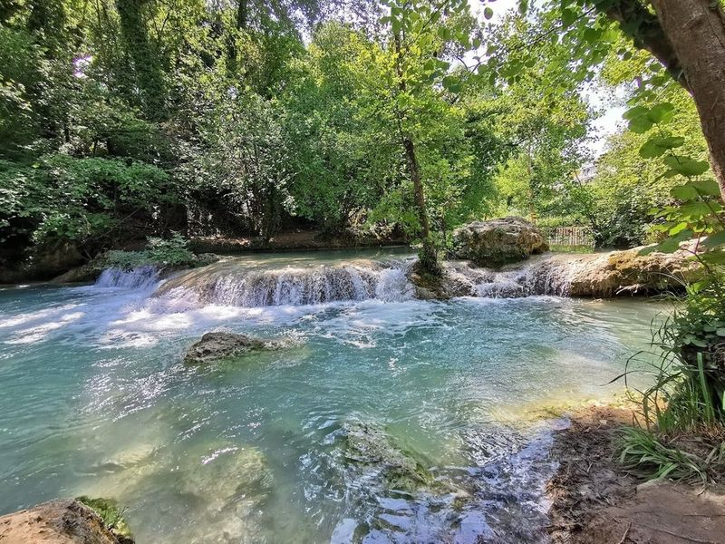
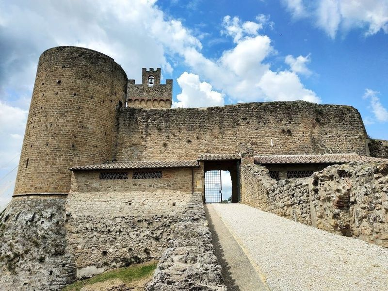
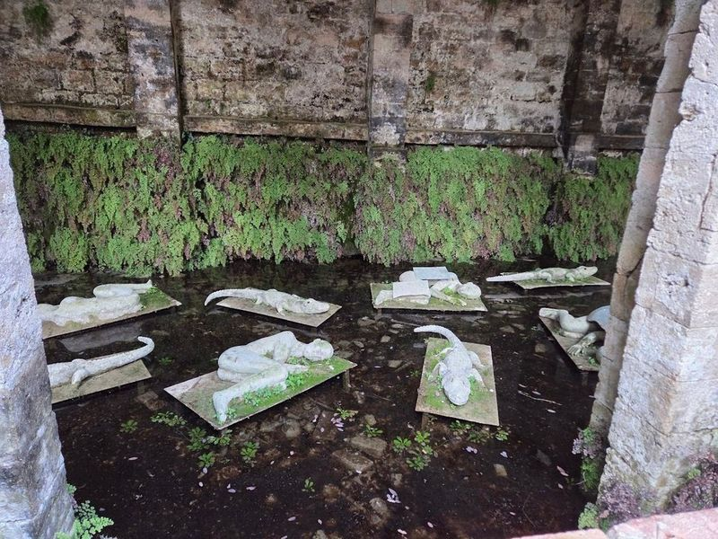
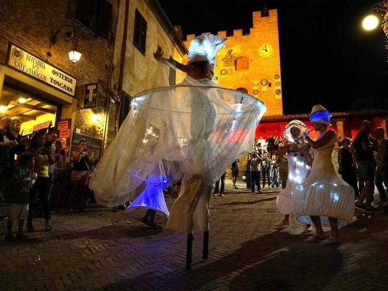

Explore San Gimignano
A Brief History
San Gimignano prospered on the Via Francigena pilgrimage route between Florence and Siena, when merchant families built tower houses in the twelfth and thirteenth centuries to display wealth and defend factions. Plague and the loss of independent commune status froze much of the skyline that later visitors nicknamed a medieval Manhattan. Surrounding saffron fields and Vernaccia vineyards supported the hill town after trade routes shifted, preserving walls and public frescoes above the Elsa valley.
Attractions Map
Top Sights & Activities

Piazza della Cisterna
Piazza della Cisterna is a triangular plaza surrounded by medieval buildings and named after its 13th-century cistern. It is one of the principal squares in San Gimignano, along with Piazza del Duomo. The plaza offers access to several notable attractions, including the Palazzo Comunale and the Basilica Collegiata di Santa Maria Assunta, known for its Romanesque architecture and impressive fresco cycles by renowned artists.

Palazzo Comunale, Pinacoteca, Torre Grossa - San Gimignano Musei
The Palazzo Comunale, Pinacoteca, and Torre Grossa are must-visit attractions in the city. The Palazzo del Popolo houses the Museo Civico, which features a remarkable collection of artworks dating from the 13th to 17th centuries, including medieval court frescos and masterpieces by renowned artists such as Lippo Memmi and Filippino Lippi.

Parco della Rocca
in the town of San Gimignano, Parco della Rocca is a captivating destination that offers travellers a glimpse into the region's medieval past. This public park, perched on a hilltop, features the intriguing ruins of the Rocca di Montestaffoli fortress. As wander through its lush greenery and remnants of ancient walls, be treated to views that stretch across the rolling Tuscan countryside and vineyards.

Chiesa di Sant'Agostino
at the northern edge of San Gimignano, the Chiesa di Sant'Agostino is a historic Catholic church that captivates travellers with its serene atmosphere and interior. While its exterior may appear austere, stepping inside reveals a treasure trove of art, including remarkable frescoes by Benozzo Gozzoli from 1464.

Porta Nuova
Porta Nuova, also known as Porta Volterrana or Porta Salis, is a majestic city gate located in the middle of Colle di Val d'Elsa. Built in 1479 as part of the defensive system for the castle of Colle, it is attributed to Giuliano da San Gallo. The gate gives the impression of being an entrance to a fortress rather than a city when viewed from outside.

Sentierelsa Trail
The Sentierelsa Trail is a 4km-long route that follows the turquoise-colored river Elsa. Starting at San Marziale and ending at Ponte di Spugna, the path features bridges, boardwalks, and rest areas. One of its highlights is the 15-meter high Diborrato waterfall cascading into a deep blue lake.

Diborrato Waterfall
Diborrato Waterfall is a terraced cascade that stands 15 meters tall, offering an exhilarating experience for nature lovers and adventure seekers alike. at the end of the Elsa Trail, this picturesque spot rewards hikers with a refreshing swim in its rocky pool after a scenic 40-minute trek. The color of the river adds to its charm, making it a delightful place for families to enjoy despite cooler water temperatures.

La Rocca di Staggia
La Rocca di Staggia is a captivating stone castle that boasts over a millennium of history, making it an intriguing destination for travelers. in a serene area away from the usual tourist crowds, this fortress offers guided tours that delve into its rich past and the historical significance of its location between Siena and Florence during the Middle Ages.

Fonte delle Fate
in the enchanting landscape of Italy, the Fonte delle Fate is a captivating fountain that draws travellers with its ethereal charm. Surrounded by lush greenery and serene nature, this magical spot is steeped in local folklore and legends. Travelers often find themselves mesmerized by the gentle sound of flowing water, which adds to the tranquil atmosphere.

Mercantia
If 're planning a summer getaway to Tuscany, make sure to include Certaldo in itinerary around mid-July to early August for the enchanting Mercantia Festival. This event transforms the streets, historic palaces, and lush gardens of the old town into a lively hub of creativity and entertainment for five days.